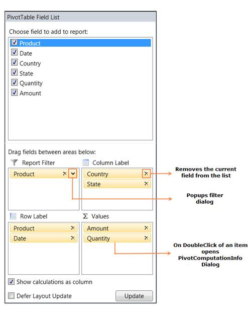

PivotSchemaDesigner for WPF can be support in PivotGrid samples so that PivotGrid can be presented like an ExcelPivotTable. It enables drag and drop feature of fields between different areas like Column, row, value and filter. By using the PivotTable Field List, you can add, rearrange, or remove fields to show data in a PivotGrid exactly the way that you want. The PivotTable Field List displays two sections, consisting of the following items:
· A field section at the top for adding fields to and removing fields from the PivotGrid.
· A layout section at the bottom for rearranging and repositioning the fields in the PivotGrid.

Figure 49: PivotTable Field List
 Fields Section
Fields Section